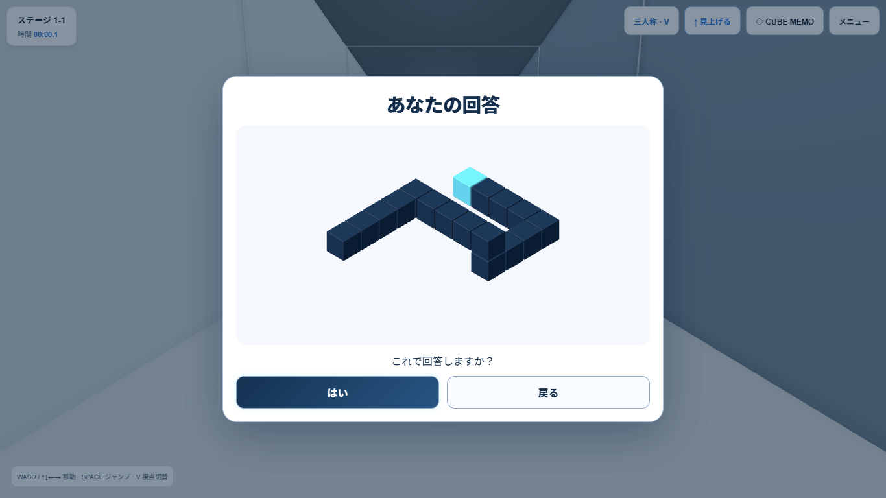
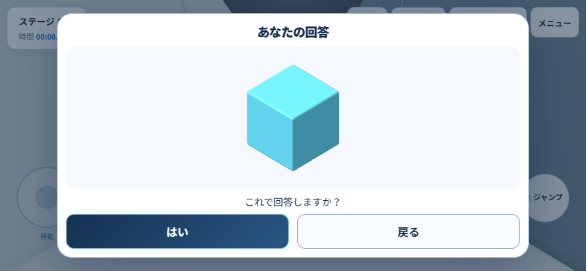
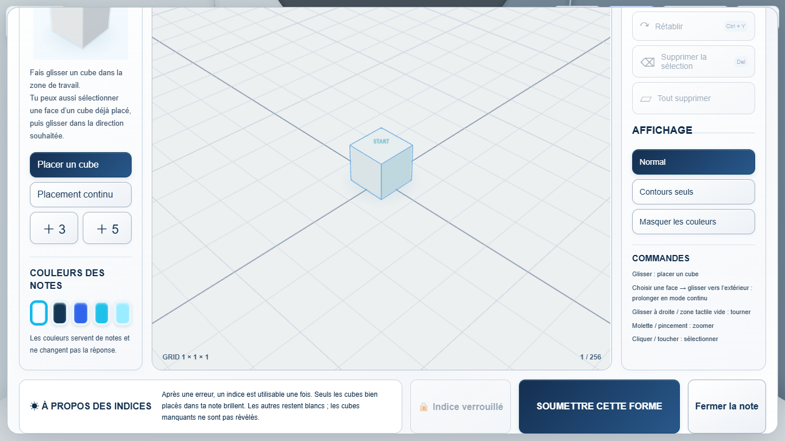
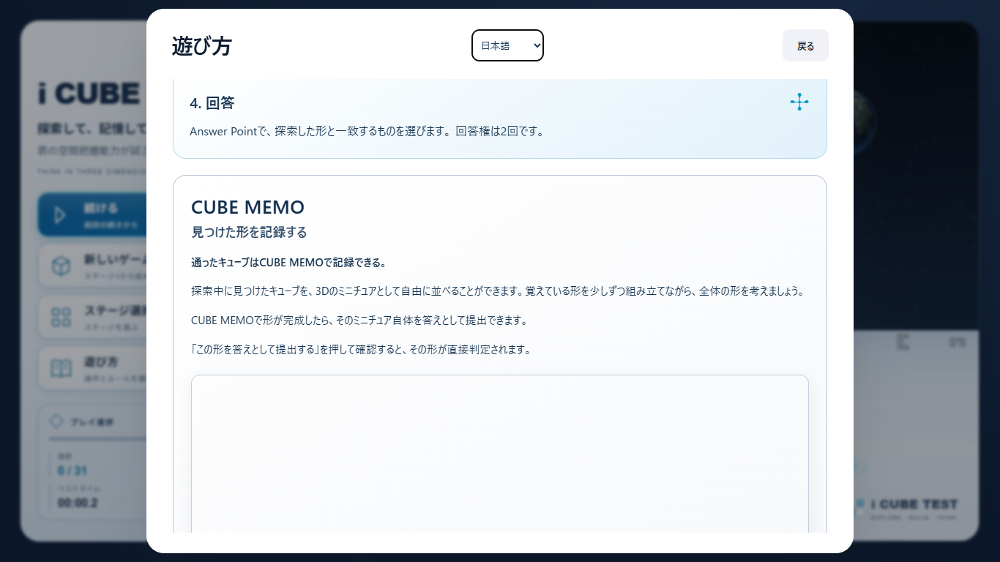

2026-09-13 · READY FOR USER QA
CUBE MEMO → この形を答えとして提出する → 3D確認 → はい → 自作形状を直接判定。10択へは進みません。Answer Pointの10択はそのまま残しています。
START基準のXYZ座標SetとCube数が完全一致した場合のみ正解。順序・色・Hint状態・カメラは採点対象外です。自由回転・平行移動した同形状は同一視しません。
確認前に保存し、Ghostを取消。戻るは無消費で編集に復帰。はいで1回だけ消費します。不正解1回目は0.75秒後にMemoへ復帰してHint解放。2回目は既存FailureのRetry／Stage Selectを表示します。
Edge／Playwrightで独立した保存領域を使用。正解Memo生成・Stage開始・Answer Point位置はQA fixture、提出／確認／回答／戻るはブラウザUI操作です。visibilityはブラウザイベントfixtureで検証。YouTube実ホストおよびスマホ物理実機は未確認です。



